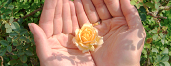

GIVING BACK TO THE COMMUNITY
New Eyes for Needy and Chinatown Optical
The importance of giving back to the community
Chinatown Optical stores and its associate stores have achieved a reputation few optical stores have built up and could match. In addition to providing the best professional eyewear services, we believe in giving back to the community. Therefore, we have a donation program for used glasses, highlighting the fact that we are dedicated to providing others that are less fortunate than us with the chance to see clearly. We truly feel our call to duty to doing what is right and think that everyone should have the ability to see clearly no matter the circumstances.
As a result, you may donate your used glasses to any of our locations. We, in turn, will be giving them to New Eyes for the Needy which is a company based in New Jersey that gives these frames to those in need nationally and internationally since 1932.
Thank you for helping out with us on a worthy cause. Remember that the smallest gesture can change another's life. Take part in making a difference today.